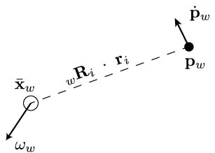

Rigid body poses in 3D
The primary difficulty when beginning to consider three-dimensional kinematics is due to the significant difference between two-dimensional and three-dimensional orientations. In two-dimensions, orientation can be represented using a single scalar value. In three-dimensions, a plethora of three-dimensional orientations are conceivable, and at least three values are necessary to represent all 3D rotations. We will not consider translation in three dimensions: it is treated exactly as in 2D (with an additional component to represent location along the \(z\) axis, of course).
We will again use the convention that frame \(w\) indicates a “world frame” and frame \(s\) indicates an alternative frame of reference.
Representations of 3D orientation
Rotation matrices
We can describe the orientation of one reference frame in 3D with respect to another using \(3\times 3\) matrices analogously to how we define relative orientations in 2D using \(2\times 2\) matrices.
Again consider our alternative frame of reference \(s\), which is collocated with \(w\) but is oriented differently. Assume that the axes of \(w\) are named \(\mathbf{a}_x\), \(\mathbf{a}_y\), and \(\mathbf{a}_z\) and that the respective axes of \(s\) are denoted \(\mathbf{a}’_x, \mathbf{a}’_y\), and \(\mathbf{a}’_z\). All of these vectors are three-dimensional. One choice of the set of vectors \(\mathbf{a}_x, \mathbf{a}_y\), and \(\mathbf{a}_z\) are the vectors \(\begin{bmatrix}1 & 0 & 0\end{bmatrix}^{\mathsf{T}}\), \(\begin{bmatrix}0 & 1 & 0\end{bmatrix}^{\mathsf{T}}\), and \(\begin{bmatrix}0 & 0 & 1\end{bmatrix}^{\mathsf{T}}\), respectively. We can now transform vectors between the reference frames using this matrix: \begin{equation} \ _{w}\mathbf{R}_{s} \triangleq \begin{bmatrix}\mathbf{a}’_{x_1} & \mathbf{a}’_{y_1} & \mathbf{a}’_{z_1} \end{bmatrix} \end{equation} Like the \(2 \times 2\) rotation matrices, the matrix above is orthogonal. A nice computational implication of this property is that the inverse of a rotation matrix is equal to its inverse (which makes inversion both fast and numerically stable). If the coordinate frame is right-handed, then \(\mathbf{a}_x \times \mathbf{a}_y = \mathbf{a}_z\) is a right-handed cross-product and the determinant of \(_w\mathbf{R}_s = 1\). If the coordinate frame is left-handed, then \(\mathbf{a}_x \times \mathbf{a}_y = \mathbf{a}_z\) is a left-handed cross-product and \(\textrm{det}(\ _w\mathbf{R}_s) = 1\).
I note that all vectors should be unit vectors and the set of vectors should be mutually orthogonal (hint: you should use this as a debugging check in your coursework). If one or both of these conditions is not satisfied, you will have significant problems!
Concatenating rotations
If we have two orientations, \(\ _w\mathbf{R}_s\) and \(\ _s\mathbf{R}_r\), we can concatenate them- effecting one rotation followed by another- using matrix multiplication: \(\ _w\mathbf{R}_r =\ _w\mathbf{R}_s \cdot \ _s\mathbf{R}_r\). Of course, matrix multiplication is commutative, so the order of multiplication is important to get the proper rotation. This warning should sound familiar: use subscripts (or superscripts, or some other system that works for you), to make sure that your operations are correct. Just verifying that your calculations are right by testing one or two cases is dangerous!
Axis-angle
The axis-angle representation of orientation appears as the following: \begin{equation} \begin{bmatrix} u_x & u_y & u_z \end{bmatrix}^{\mathsf{T}} \theta \end{equation} This representation indicates that a rotation about the unit vector \(\begin{bmatrix} u_x & u_y & u_z \end{bmatrix}^{\mathsf{T}}\) by an angle of \(\theta\).
The rotation matrix representation corresponds one-to-one to SO(3), the “special orthogonal group” of orientations in three-dimensions. However, the axis-angle representation generally maps two-to-one to SO(3): the values \((\begin{bmatrix} u_x & u_y & u_z \end{bmatrix}^{\mathsf{T}} \theta)\) and \((\begin{bmatrix} -u_x & -u_y & -u_z \end{bmatrix}^{\mathsf{T}} -\theta)\) are identical. The exception is a singularity at \((\begin{bmatrix} u_x & u_y & u_z \end{bmatrix}^{\mathsf{T}} 0)\), where the values of \(u_x\), \(u_y\), and \(u_z\) are arbitrary: all values map to an identity orientation. The singularity makes conversion from a rotation matrix to the axis-angle representation a little tricky, as will be seen below.
Conversion to rotation matrix
\begin{equation}
\begin{bmatrix}
u_x^2v + \cos{\theta} & u_x u_y v - u_z\sin{\theta} & u_xu_z v + y\sin{\theta}\\
u_xu_yv + u_z\sin{\theta} & u_y^2v + \cos{\theta} & u_yu_z v - u_x\sin{\theta}\\
u_xu_zv - u_y\sin{\theta} & u_yu_zv - u_x\sin{\theta} & u_z^2v + \cos{\theta}
\end{bmatrix}
\end{equation}
where \(v = 1 - \cos{\theta}\) if \(|\theta| > \epsilon\), and \(v = \frac{\sin^2{\theta}}{1+\cos{\theta}}\) otherwise (this formula minimizes cancellation error (see [Ericson 2005], p. 441).
Note that there exists no straightforward way to concatenate rotations using the axis-angle representation; one must convert to rotation matrices, multiply, and convert back (if so desired).
Conversion from rotation matrix
\begin{align} \theta & = \cos^{-1}\Big(\frac{1}{2}(R_{xx} + R_{yy} + R_{zz} - 1)\Big) \\ u_x & = \frac{R_{zy} - R_{yz}}{2 \sin \theta} \\ u_y & = \frac{R_{xz} - R_{zx}}{2 \sin \theta} \\ u_z & = \frac{R_{yx} - R_{xy}}{2 \sin \theta} \end{align}
Unit quaternions
Unit quaternions take the form: \begin{equation} \left.\begin{array}{llll} e_x & e_y & e_z & e_w \end{array}\right. \end{equation} and are subject to the constraint \(e_x^2 + e_y^2 + e_z^2 + e_w^2 = 1\). The following general text about unit quaternions- also known as rotational quaternions and Euler parameters (the latter especially in Mechanics)- was adapted from Wikipedia:
Unit quaternions represent [SO(3)] in a very straightforward way.
The correspondence between rotations and quaternions can be understood
by first visualizing the space of rotations itself. In order to
visualize the space of rotations, it helps to consider a simpler case.
Any rotation in three dimensions can be described by a rotation by
some angle about some axis; for our purposes, we will use an axis
vector to establish handedness for our angle. Consider the special
case in which the axis of rotation lies in the xy plane. We can then
specify the axis of one of these rotations by a point on a circle
through which the vector crosses, and we can select the radius of the
circle to denote the angle of rotation. Similarly, a rotation whose
axis of rotation lies in the xy plane can be described as a point on
a sphere of fixed radius in three dimensions. Beginning at the north
pole of a sphere in three dimensional space, we specify the point at
the north pole to be the identity rotation (a zero angle rotation).
Just as in the case of the identity rotation, no axis of rotation is
defined, and the angle of rotation (zero) is irrelevant. A rotation
having a very small rotation angle can be specified by a slice through
the sphere parallel to the xy plane and very near the north pole.
The circle defined by this slice will be very small, corresponding to
the small angle of the rotation. As the rotation angles become larger,
the slice moves in the -z direction, and the circles become larger
until the equator of the sphere is reached, which will correspond to a
rotation angle of pi radians. Continuing southward, the radii of the
circles now become smaller (corresponding to the absolute value of the
angle of the rotation considered as a negative number). Finally, as
the south pole is reached, the circles shrink once more to the
identity rotation, which is also specified as the point at the
south pole.
Angle between two orientations
One nice property of unit quaternions is that they allow one to compute the distance between two orientations using the geodesic between the orientations. Think of the geodesic as the shortest path connecting any two orientations in SO(3). The distance between two orientations \(A\) and \(B\) is measured using the angle between them: \(\theta = \cos^{-1}{\mathbf{e}^{A^\mathsf{T}}\mathbf{e}^B}\) or equivalently (if it disturbs you to perform dot products over unit quaternions: \begin{equation} \theta = \cos^{-1}{(e^A_xe^B_x + e^A_ye^B_y + e^A_ze^B_z + e^A_we^B_w)} \end{equation}
Conversion to rotation matrices
We can transform unit quaternions to \(3 \times 3\) rotation matrices using the function definition \(R(.)\) below: \begin{equation} R(\mathbf{e}) = \begin{bmatrix} 2(e_x^2 + e_w^2) - 1 & 2(e_xe_y - e_ze_w) & 2(e_xe_z + e_ye_w) \\ 2(e_xe_y + e_ze_w) & 2(e_y^2 + e_w^2) - 1 & 2(e_ye_z - e_xe_w) \\ 2(e_xe_z - e_ye_w) & 2(e_ye_z + e_xe_w) & 2(e_z^2 + e_w^2) - 1 \end{bmatrix} \end{equation}
Transforming vectors
If we define the two matrices \(\mathbf{G}\) and \(\mathbf{L}\) as follows: \begin{equation} \mathbf{G}(\mathbf{e}) \triangleq \begin{bmatrix} -e_x & e_w & -e_z & e_y \\ -e_y & e_z & e_w & -e_x \\ -e_z & -e_y & e_x & e_w \end{bmatrix} \end{equation}
\begin{equation} \mathbf{L}(\mathbf{e}) \triangleq \begin{bmatrix} -e_x & e_w & e_z & -e_y \\ -e_y & -e_z & e_w & e_x \\ -e_z & e_y & -e_x & e_w \end{bmatrix} \end{equation} then you can verify that \(R(\mathbf{e}) = \mathbf{G}(\mathbf{e}){\mathbf{L}(\mathbf{e})}^{\mathsf{T}}\). Then, transforming a vector \(\mathbf{v}\) is most efficient by applying the operation \(\mathbf{G}(\mathbf{e}){\mathbf{L}(\mathbf{e})}^\mathsf{T}\mathbf{v}\).
Inversion of rotation
Inversion of rotation using quaternions is simple using the conjugate of a quaternion: simply negate the vector component of the quaternion values to get the conjugate: \begin{equation} R(\mathbf{e})^{-1} = R(-\mathbf{e}) \end{equation}
Concatenation of rotations
We can apply rotation \(A\) (represented by quaternion \(\mathbf{e}^A\)) followed by rotation \(B\) (represented by quaternion \(\mathbf{e}^B\) using the following matrix-vector multiplication operation:
\begin{equation}
\mathbf{e}^B \otimes \mathbf{e}^A = \begin{bmatrix}
e^A_w & e^A_z & -e^A_y & e^A_x \\
-e^A_z & e^A_w & e^A_x & e^A_y \\
e^A_y & -e^A_x & e^A_w & e^A_z \\
-e^A_x & -e^A_y & -e^A_z & e^A_w
\end{bmatrix}
\begin{bmatrix}
e^B_x \\
e^B_y \\
e^B_z \\
e^B_w
\end{bmatrix}
\end{equation}
Alternative representations
There exist alternative representations of orientations in 3D, including Euler/roll-pitch-yaw/Tait-Bryan angles, Gibbs vectors, Pauli spin matrices, among others. I will not cover these representations in this post.
Storage considerations
Encoding orientations exposes a tradeoff between speed and memory that may not immediately obvious to you. A few options for encoding orientations are:
- Store the full \(3 \times 3\) matrix
- Store the first two columns of the full \(3 \times 3\) matrix and compute the last column as needed at run-time
- Encode orientation using a three-dimensional orientation representation (Euler angles, roll-pitch-yaw angles)
- Encode orientation using a four-dimensional orientation representation (Quaternions, axis-angle) The various computational tradeoffs between the choice of representation is shown in the table below.
| | \(3\times 3\) matrix | \(2 \times 3\) matrix | Euler-angles | Quaternions | Axis-angle | | —- | —- | —- | —- | —– | —- | Storage | 9 values | 6 values | 3 values | 4 values | 4 values | Conversion to matrix | N/A | 6, 3+ | 6 trig, 16, 4+ | 30, 12+ | 2 trig, 24, 18+ | Vector transform | 9, 6+ | 15, 9+ | N/A | 24, 15+ | 23, 16+, 2 trig | Rotation concatenation | 27, 18+ | 33, 21+ | N/A | 16, 12+ | N/A | Re-normalization cost | 36, 27+, 3 sqrt | 15, 11+, 2 sqrt | N/A | 4, 3+, 1 sqrt | N/A |
Homogeneous transformations
Homogeneous transformations work in 3D exactly like they did in 2D. The obvious differences are that homogeneous coordinates are now four dimensional: \begin{equation} \begin{bmatrix} x \\ y \\ z \\ 1 \end{bmatrix} \end{equation}
and that the transformation matrices are now \(4 \times 4\). The upper left \(3 \times 3\) block of the matrix is a rotation matrix and the fourth column is a translation vector. The matrix still represents a rotation followed by a translation. The block form of the matrix still looks like this: \begin{equation} \mathbf{T} \equiv \begin{bmatrix} \mathbf{R} & \mathbf{t} \\ \mathbf{0} & 1 \end{bmatrix} \label{eqn:homogeneous} \end{equation} but now \(\mathbf{R}\) is the \(3 \times 3\) rotation matrix and \(\mathbf{t}\) is the \(3 \times 1\) translation vector.
Homogeneous transformations can be inverted exactly as they were in the two-dimensional case.
Angular velocity and acceleration in 3D
In order to explore the concept of angular velocity, we’ll examine the velocity of a point on a rigid body in 3D both geometrically and using calculus. \begin{equation} \mathbf{p}_w = \bar{\mathbf{x}}_w + _w\mathbf{R}_i\mathbf{r}_i \end{equation} where \(\mathbf{p}_w\) is the point in the global frame, \(_w\mathbf{R}_i\) is the rotation matrix from frame \(i\) to the global frame, and \(\mathbf{r}_i\) is the vector from the center-of-mass of the body to the point in the body frame, \(i\). When we take the time-derivative of this equation, we get: \begin{equation} \dot{\mathbf{p}}_w = \dot{\bar{\mathbf{x}}}_w + _w\dot{\mathbf{R}}_i\mathbf{r}_i \end{equation} The remainder of this section will focus on gleaning insight into the structure of \(_w\mathbf{R}_i\). We start with a geometric interpretation of \(\dot{\mathbf{p}}_w\) using the figure below. If we ignore the body’s linear velocity (by assuming that \(\dot{\bar{\mathbf{x}}}_w = \mathbf{0}\)), then we find that the velocity of \(\dot{\mathbf{p}}_w\) is orthogonal both to the axis of rotation \(\mathbf{\omega}_w/||\mathbf{\omega}_w||\) and to the vector (\(||\mathbf{p} - \bar{\mathbf{x}}||\)). You can confirm geometrically or numerically that the magnitude of \(\dot{\mathbf{p}}_w\) is proportional to both \(||\mathbf{\omega}_w||\) and \(||\mathbf{r}_i||\).

Based on this geometric interpretation of point velocity, it should be clear that \(\dot{\mathbf{p}}_w = \mathbf{\omega}_w \times\ _w\mathbf{R}_i\mathbf{r}_i\) (when the linear velocity at the center-of-mass is not zero, it just adds to \(\dot{\mathbf{p}}_w\)). Accounting for the equation above, we have \(_w\dot{\mathbf{R}}_i\mathbf{r}_i = \mathbf{\omega}_w \times _w\mathbf{R}_i\mathbf{r}_i\), and thus \(_w\dot{\mathbf{R}}_i = \mathbf{\omega}_w \times _w\mathbf{R}_i\). This formula should appear strange to you, because how can we take the cross product between a vector and a matrix? Doing a little matrix arithmetic, we get \begin{equation} \label{eqn:skewsymm} _w\dot{\mathbf{R}}_i\cdot_w{\mathbf{R}_i}^{\mathsf{T}} = \tilde{\mathbf{\omega}}_w \end{equation} where we will get to the definition of \(\tilde{\mathbf{\omega}}\) shortly.
Now, let’s use calculus to examine the time-derivative of a rotation matrix. We start with an identity from orthogonality: \begin{equation} _w\mathbf{R}_i\cdot{_w\mathbf{R}_i}^{\mathsf{T}} - \mathbf{I} = \mathbf{0} \end{equation} Now computing the time-derivative: \begin{equation} \dot{_w\mathbf{R}_i}\cdot{_w\mathbf{R}_i}^{\mathsf{T}} + _w\mathbf{R}_i\cdot{\dot{_w\mathbf{R}_i}}^{\mathsf{T}} = \mathbf{0} \end{equation} Using equations above, it should be apparent to you that \begin{equation} \tilde{\mathbf{\omega}}_w + {\tilde{\mathbf{\omega}}_w}^{\mathsf{T}} = \mathbf{0} \end{equation} This equation indicates that \(\tilde{\mathbf{\omega}}_w\) is a skew symmetric matrix, which takes the form: \begin{equation} \tilde{\mathbf{\omega}} = \begin{bmatrix} 0 & -\omega_z & \omega_y \\ \omega_z & 0 & -\omega_x \\ -\omega_y & \omega_x & 0 \end{bmatrix} \end{equation} from which we can recover the \(3 \times 1\) angular velocity tensor \(\mathbf{\omega}_w = \begin{bmatrix} \omega_x & \omega_y & \omega_z \end{bmatrix}^T\).
Angular acceleration
Let us now take the time-derivative of \(\dot{\mathbf{p}}_w\) to get: \begin{equation} \ddot{\mathbf{p}}_w = \ddot{\bar{\mathbf{x}}}_w + \frac{d}{dt}(\tilde{\mathbf{\omega}}_w\cdot_w\mathbf{R}_i)\mathbf{r}_i = \ddot{\bar{\mathbf{x}}}_w + \dot{\mathbf{\omega}}_w \times _w\mathbf{R}_i \cdot \mathbf{r}_i + \mathbf{\omega}_w \times _w\dot{\mathbf{R}}_i \cdot \mathbf{r}_i \label{eqn:pddot} \end{equation} The \(3 \times 1\) vector \(\dot{\mathbf{\omega}}_w\) (also commonly written \(\mathbf{\alpha}_w\)) is the angular acceleration. The equation above is equivalent to: \begin{equation} \ddot{\mathbf{p}}_w = \ddot{\bar{\mathbf{x}}}_w + \dot{\mathbf{\omega}}_w \times _w\mathbf{R}_i \cdot \mathbf{r}_i + \mathbf{\omega}_w \times \mathbf{\omega} \times _w\mathbf{R}_i \cdot \mathbf{r}_i \end{equation} The second term on the right above is called the transverse acceleration and the term to its right is the centripetal acceleration.
Since we’re examining centripetal acceleration, let’s look at the phenomenon of Coriolis acceleration. To do that, we need to compute the acceleration of the point with respect to a point defined in a moving frame (\(s\), which we now assume is moving): \begin{align} \mathbf{p}_s & = \ _s\mathbf{R}_w\mathbf{p}_w + \mathbf{x}_w^s \\ \dot{\mathbf{p}}_s & = _s\dot{\mathbf{R}}_w\mathbf{p}_w + \ _s\mathbf{R}_w\dot{\mathbf{p}}_w \\ \ddot{\mathbf{p}}_s & = \dot{\mathbf{\omega}}_s \times \ _s\mathbf{R}_w\mathbf{p}_w + \mathbf{\omega}_s \times \ _s\mathbf{R}_w\dot{\mathbf{p}}_w + \mathbf{\omega}_s \times \ _s\mathbf{R}_w\dot{\mathbf{p}}_w + \ _s\mathbf{R}_w\ddot{\mathbf{p}}_w \\ & = \dot{\mathbf{\omega}}_s \times \ _s\mathbf{R}_w\mathbf{p}_w + 2\mathbf{\omega}_s \times \ _s\mathbf{R}_w\dot{\mathbf{p}}_w + \ _s\mathbf{R}_w\ddot{\mathbf{p}}_w \end{align} The second term that appears is the Coriolis acceleration. Notice that this term only appears when observing the acceleration of a point from a moving frame.
Renormalization
Let us say that you wish to update the rigid body orientation using first-order integration (although the problem we are exploring happens with any integration approach): \begin{equation} \mathbf{R}(t+\Delta t) = \mathbf{R}(t) + \Delta t\cdot \dot{\mathbf{R}}(t) \end{equation} If the angular velocity is large, then \(\dot{\mathbf{R}}\) will be large as well. As a result, the columns of \(\mathbf{R}(t+\Delta t)\) will generally no longer be either normalized or mutually orthogonal. \(\mathbf{R}(t + \Delta t)\) must then be renormalized using Gram-Schmidt normalization.
Time-derivatives of quaternions
The first time-derivative of the unit quaternion exhibits the following (identical) relationships with angular velocity: \(\mathbf{\omega}_w = 2\mathbf{G}(\mathbf{e})\dot{\mathbf{e}}\) and \(\dot{\mathbf{e}} = \frac{1}{2}{\mathbf{G}(\mathbf{e})}^{\mathsf{T}}\mathbf{\omega}_w\). It can also be shown that \(\mathbf{\omega}_i = 2\mathbf{L}(\mathbf{e})\dot{\mathbf{e}}\) and \(\dot{\mathbf{e}} = \frac{1}{2}{\mathbf{L}(\mathbf{e})}^{\mathsf{T}}\mathbf{\omega}_i\), where \(\mathbf{\omega}_i\) is the angular velocity vector in the body’s frame.
An advantage of unit quaternions is that renormalization is simple using an update: \begin{align} \mathbf{e}(t + \Delta t) & = \mathbf{e}(t) + \Delta t \cdot \dot{\mathbf{e}}(t) \\ \mathbf{e}(t + \Delta t) & \leftarrow \frac{\mathbf{e}(t + \Delta t)}{\sqrt{e_x(t + \Delta t) + e_y^2(t + \Delta t) + e_z^2(t + \Delta t) + e_w^2(t + \Delta t)}} \end{align}
The second time-derivative of the unit quaternion exhibits the following relationships with angular acceleration: \(\dot{\mathbf{\omega}}_w = 2\mathbf{G}(\mathbf{e})\ddot{\mathbf{e}}\) and \(\ddot{\mathbf{e}} = \frac{1}{2}{\mathbf{G}(\mathbf{e})}^{\mathsf{T}}\dot{\mathbf{\omega}}_w\). It can also be shown that \(\dot{\mathbf{\omega}}_i = 2\mathbf{L}(\mathbf{e})\ddot{\mathbf{e}}\) and \(\ddot{\mathbf{e}} = \frac{1}{2}{\mathbf{L}(\mathbf{e})}^{\mathsf{T}}\dot{\mathbf{\omega}}_i\).
Generalized coordinates
Our choices for generalized coordinates, velocities, and accelerations are:
- Use one representation for everything (position plus unit quaternions). The advantages with this approach are that (1) coordinates/velocities/accelerations can be added to each other and (2) for dynamics, all formulas can be dealt with abstractly as \(\mathbf{f} = \mathbf{M}\mathbf{a}\) (Newton’s second law), \(\mathbf{p} = \mathbf{M}\mathbf{v}\) (generalized momentum), etc. (one never needs to do any intermediate calculations).
- Use position and multiple representations for orientation, such as unit quaternions and (typically) scaled-axis angle (i.e., \(\mathbf{\omega}, \dot{\mathbf{\omega}}\)). The advantages with this approach are that (1) it’s more compact (generalized velocities and accelerations for rigid bodies require only six parameters, generalized inertia matrices are only \(6 \times 6\) rather than \(7 \times 7\)) and (2) it’s far simpler: one need not convert generalized inertia, generalized forces, etc. from their “natural” six-dimensional representation (to be explored at a later time) to a less-intuitive seven-dimensional representation.
Generalized coordinates in the global reference frame
Let’s first look at the generalized coordinates for a body defined in the global reference frame, \(w\). We will define the generalized coordinates using unit quaternions: \begin{equation} \mathbf{q}_w = \begin{bmatrix} \bar{x}_w \\ \bar{y}_w \\ \bar{z}_w \\ \mathbf{e}_i \end{bmatrix} \end{equation} where \({ \bar{x}_w, \bar{y}_w, \bar{z}_w }\) is the position of the center-of-mass in frame \(w\). \(\ _w\mathbf{e}_i\) gives the orientation of the body relative to the global frame.
General coordinates in another reference frame
For comparison, let’s look at how the body is defined in another reference frame, \(s\), which is defined relative to frame \(\mathbf{w}\) by a translation of \(\mathbf{x}_w^s\) and by an orientation via the rotation matrix \(_s\mathbf{R}_w\) (and using the equivalent unit quaternion \(\ _s\mathbf{e}_w\)). The generalized coordinates in frame \(s\) are now: \begin{equation} \mathbf{q}_s = \begin{bmatrix}_s\mathbf{R}_w \begin{bmatrix}\bar{x}_w \\ \bar{y}_w \\ \bar{z}_w \end{bmatrix} + \mathbf{x}_w^s \\ _s\mathbf{e}_w \otimes _w\mathbf{e}_i \end{bmatrix} \end{equation}
Generalized velocities in the global reference frame
Let’s now compute the time-derivatives: \begin{equation} \dot{\mathbf{q}}_w = \begin{bmatrix} \dot{\bar{x}}_w \\ \dot{\bar{y}}_w \\ \dot{\bar{z}}_w \\ _w\dot{\mathbf{e}}_i\end{bmatrix} \end{equation}
Generalized velocities in another reference frame
The generalized velocity in \mbox{frame \(s\)} is: \begin{equation} \dot{\mathbf{q}}_s = \begin{bmatrix}\tilde{\mathbf{\omega}}_s\cdot \ _s\mathbf{R}_w\begin{bmatrix}\dot{\bar{x}}_w \\ \dot{\bar{y}}_w \\ \dot{\bar{z}}_w \end{bmatrix} \\ _s\mathbf{e}_w \otimes _w\dot{\mathbf{e}}_i \end{bmatrix} \end{equation} Here we are assuming that frame \(s\) is fixed (and we already know that frame \(w\) is fixed, since it is the ``global’’ frame of reference), because \(\mathbf{x}_w^s\) disappears upon taking the derivative and \(\ _s\mathbf{e}_w\) is constant.
Generalized velocities in a moving reference frame
What if frame \(s\) is not fixed but instead moves relative to frame \(w\) with linear velocity \(\dot{\mathbf{x}}_w^s\) and angular velocity \(\dot{\mathbf{\omega}}_w^s\)? Then: \begin{equation} \dot{\mathbf{q}}_s = \begin{bmatrix}\tilde{\mathbf{\omega}}_s\cdot \ _s\mathbf{R}_w \begin{bmatrix}\dot{\bar{x}}_w \\ \dot{\bar{y}}_w \\ \dot{\bar{z}}_w \end{bmatrix} + \dot{\mathbf{x}}^s_w \\ _s\dot{\mathbf{e}}_w \otimes _w\mathbf{e}_i + _s\dot{\mathbf{e}}_w \otimes _w\mathbf{e}_i \end{bmatrix} \end{equation}